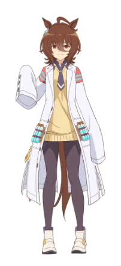
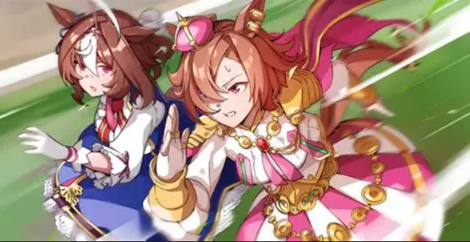

Les meves Umas favorites
Agnes Tachyon

Va ser un cavall nascut en 1998 i conegut per la seva velocitat. A l'anime, Agnes Tachyon és representada com una científica obsessionada amb superar els límits de velocitat, experimentant constantment amb ella mateixa. És excèntrica, confiada i molt competitiva. La seva retirada prematura després d'una lesió deixa la pregunta de fins on hauria pogut arribar.
«Si existe un límite, experimentemos hasta romperlo.»
Meisho Doto

Nascuda el 1996, Meisho Doto va ser coneguda com una gran rival de TM Opera O i sovint acabava en segon lloc. A l'anime és una Uma tímida i insegura que vol superar les seves pors i guanyar confiança en si mateixa. Tot i les seves dificultats, aconsegueix guanyar carreres importants i mai deixa de lluitar. És una de les meves Umas favorites pel seu disseny i la seva personalitat.
«No necesito dejar de tener miedo para seguir adelante.»